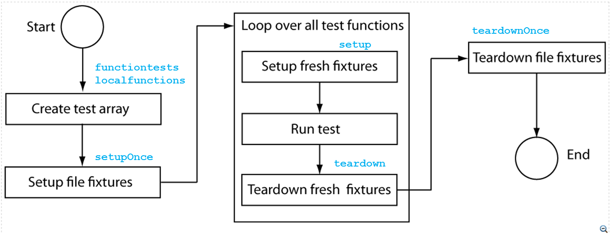

Chapter 03 - Test and Verification of MATLAB Code.
Author: Ken Deeley, ken.deeley@mathworks.co.uk
This chapter focusses on formal test and verification procedures for MATLAB algorithms, using the unit testing framework introduced in version R2013a of MATLAB (note that R2013a introduced an object-oriented test framework, and R2013b introduced a function-based test framework). In this chapter we are working exclusively with the function-based unit testing framework. The idea is that we have now written an algorithm in MATLAB, and before it is deployed in a real situation, we should take some measures to ensure that the code is robust and meets its required specifications. In the previous chapter we claimed that the resulting function was robust, flexible and responds correctly to error conditions, but we have not tested this in any way. In this chapter we will learn how to use the function-based unit testing framework to write function-based unit tests and formally verify correct behaviour of our algorithm.
Outline:
- The MATLAB Unit Testing Framework
- Function-based unit testing
- Local functions
- The test environment
- Organising test paths and test data
- Setup and teardown functions
- Effective test design
- Writing test functions
- Testing robustness of function interfaces
- Testing numerical algorithms
- Test design considerations
- Running tests and evaluating results
Reference files for this chapter:
- ../Reference/test_F03_fitQuadModel.m
- ../Test_Data/fitQuadModel_TestData.mat
Contents
- Unit Testing Framework: Overview.
- Function-Based Unit Testing.
- Local Test Functions.
- Setup and Teardown Functions.
- Task Execution.
- Writing Test Functions - Workflow.
- Select Qualifications.
- Select Test Type.
- Testing Robustness of Function Interfaces.
- Testing Numerical Algorithms.
- Running Tests and Evaluating Results.
Unit Testing Framework: Overview.
Unit testing refers to the process of verifying that source code is fit for purpose, meets design specifications and exhibits correct behaviour. The term “unit” refers to the individual entities of source code under test. For example, in MATLAB, a unit could be a function which we have designed to perform certain tasks (e.g. removing NaNs from data or determining regression coefficients). A unit test may be regarded as a means of formalising the specifications that code is required to meet. Writing and using unit tests provides several benefits, including:
- early identification of potential problems and bugs in code;
- facilitation of subsequent code changes (i.e. ensuring that code modification in the future does not alter code correctness);
- greater motivation to modularise code into smaller, individually testable units;
- clearer documentation of code requirements and specifications.
In this chapter we will focus on the function-based approach to unit testing in MATLAB. This approach is documented under "MATLAB" --> "Advanced Software Development" --> "Unit Testing Framework" --> "Write Unit Tests" --> "Write Function-Based Unit Tests".
Function-Based Unit Testing.
Function-based unit testing is available in MATLAB from release R2013b onwards. Function-based unit testing allows MATLAB programmers with experience of writing functions to quickly develop unit tests. The first step in function-based unit testing is to create the main test function file. This is a single MATLAB file containing a main function and all the individual local test functions. The main function must be named using the word "test" either at the beginning or at the end of the name. This is not case-sensitive. For example,
- test_myAlgorithm
- myAlgorithmTest
- TestMyAlgorithm
- testMyAlgorithm
are all valid main test function names. The main function has no input arguments and returns one output (a test array gathering each of the individual unit tests into one array). The main test function must collect all of the local test functions into a test array. This test array is generated via a call to the functiontests function, which assembles the test array using a cell array of function handles to the local functions in the file. In turn, a cell array of function handles to the local functions in the main file is generated using a call to localfunctions. In order to be recognised as valid individual unit tests, local functions must include the case-insensitive word “test” at the beginning or end of the function name, in exactly the same way that the main test file must be named in order to be recognised as a valid test file. The main test file is sometimes referred to as a "test harness", because it collects together all of the local tests.
Recommended activity: create a new test file for fitQuadModel and name it test_fitQuadModel. Define the test array output using functiontests and localfunctions.
See the file test_F03_fitQuadModel_001.
Local Test Functions.
The second step in creating function-based unit tests is to write the local test functions. These are included as local functions in the main test-generating function. To indicate that a local function should be used as a local test function, include the case-insensitive word "test" either at the beginning or at the end of its name. Local test functions have a fixed interface. Each local test function must accept a single input argument (a function test case object) and return no outputs. The MATLAB Unit Testing Framework automatically generates the function test case object. A typical local test function therefore has the following basic skeleton:
function test_localFunc(testCase) … end
The function test case object can be used to pass data between the local test functions.
Recommended activity: write local test function stubs for the following unit tests:
- test_nargin
- test_invalidInputs
- test_validInputs
- test_basicFit
- test_allNaNs
- test_deficientRank
Call the test harness with one output to ensure that an array of tests is returned.
See the file test_F03_fitQuadModel_002.
Setup and Teardown Functions.
Before running tests, it is often required to change directory or load some data from a MAT-file. We may also require a certain system state to be established before running a test. For example, we may require a figure to be open before testing a graphical function, or we might need to set a specific starting point in a random number stream in order to test a Monte Carlo simulation. Setup and teardown code, also referred to as test fixture functions, set up the pre-test state of the system and return it to the original state after running the test. This is important because the results of tests should be completely reproducible, and we also do not want to interfere with existing settings or the existing system state. Anything that is modified in the setup code before running the tests should be "undone" in the teardown code. There are two types of these functions: file fixture functions that run once per test file, and fresh fixture functions that run before and after each local test function. As with local test functions, the only input to test fixture functions is a function test case object, which is automatically passed to each function by the unit test framework. The function test case object is a means to pass information between setup functions, local test functions, and teardown functions. By default, every test case object has a TestData property which is a 1x1 struct. This allows easy addition of fields and data to the TestData property, which updates the function test case object. Typical uses for this test data include paths and graphics handles. File fixture functions are used to share setup and teardown functions across all the tests in a file. The names for the file fixture functions must be setupOnce and teardownOnce, respectively. These functions execute a single time for each file. On the other hand, fresh fixture functions are used to set up and tear down states for each local test function. The names for these fresh fixture functions must be setup and teardown, respectively.
Recommended activity: add file fixtures to the main test file. The setup file fixture should add the Test_Data folder to the path, load data from a MAT-file and save the current rng status as follows:
- addpath('Test_Data')
- testCase.TestData = load('fitQuadModel_TestData.mat');
- testCase.TestData.currentRNG = rng;
The teardown file fixture should undo these operations and restore the original state of the system, as follows:
- rmpath('Test_Data')
- s = testCase.TestData.currentRNG;
- rng(s)
See the file test_F03_fitQuadModel_003.
Task Execution.
At this point, we have the basic layout of the main test function in place. However, we have not written any test code. The diagram below illustrates the sequence of tasks performed by the unit testing framework when we come to run our tests. Notice that file fixture functions are only invoked once per test file, whereas fresh fixture functions are invoked once per local test function. Our next task will be to implement the test code for each individual local test function. When this is complete, we will then be able to run the tests, which initiates the sequence of tasks detailed in the diagram below.

Writing Test Functions - Workflow.
Our next step is to write the individual local test functions within the main test function file. We will use the following workflow when designing and writing tests:
- Select the appropriate qualifications for testing values and responding to failures.
- Select the type of the test.
- Write the local test function code using the appropriate functions determined from steps 1 and 2.
We will discuss steps 1 and 2 in detail during the next two topics in this chapter.
Select Qualifications.
Qualifications are functions for testing values and responding to failures. Within the MATLAB unit testing framework, there are four types of qualifications, and it is important to choose the most appropriate qualification when designing individual unit tests.
- Verifications: verifications produce and record code failures without throwing an exception. This means that any remaining local test function code will still run. In the event of verification failure, the unit testing framework will mark the test as Failed. In general, use verifications when you want to test other conditions in the presence of some code failures.
- Assumptions: assumptions ensure that a test runs only when certain prerequisite conditions are satisfied. Importantly, the event of assumption failure does not produce a test failure. When an assumption failure occurs, the unit testing framework marks the test as Incomplete. In general, use assumptions when you want to verify that certain prerequisite conditions are in place before running the remainder of the test, but you do not want the failure of the prerequisite conditions to count as a test failure.
- Assertions: assertions ensure that the preconditions of the current test are met. In the event of assertion failure, the test is marked as Failed by the unit testing framework. Any remaining code in the local test function will not be executed; the unit testing framework will proceed to the next local test function. In general, use assertions when you want to verify that certain prerequisite conditions are in place before running the remainder of the test, and you want the failure of the prerequisite conditions to count as a test failure.
- Fatal assertions: fatal assertions terminate the test running process. This means that if a fatal assertion fails, the test process will stop and an exception will be thrown. Any remaining local test function code will not run, and any remaining local test functions will not run either. Fatal assertions would generally be used when a failure at the assertion point renders the remainder of the current tests invalid. For example, it might not make sense to run subsequent tests if it is known that a previous test has failed.
Select Test Type.
After selecting the qualification, the second step in the workflow when writing unit test code is to choose the type of the test. There is a large number of preexisting functions for testing specific conditions. For full details of each type, see the documentation available at "MATLAB" --> "Advanced Software Development" --> "Unit Testing Framework" --> "Write Unit Tests." For each type of test, the function name is prefixed with either "verify", "assume", "assert" or "fatalAssert" as appropriate.
Testing Robustness of Function Interfaces.
We are now in a position to write implementation code for the individual local test functions (the final step of the workflow for writing test functions). As a first step, we will implement tests for robustness of the function interface. This means that we are testing the code to ensure it correctly handles the following situations:
- the function is invoked with an incorrect number of input or output arguments;
- the function is invoked with correct numbers of input and output arguments, but with incorrect input arguments (i.e. inputs with the incorrect data type, dimension or other attributes).
In this situation, many test conditions are similar and the failure of any given condition does not imply that we wish to terminate the test process. In each test condition, we require to check that the function under test throws an exception when user-supplied input data is incorrect. We will therefore select "verification" as our qualification, and "error" as our test type, which leads us to the verifyError function.
The verifyError function is used with the following syntax:
verifyError(testCase, expression, identifier, diagnostic)
Here,
- testCase is the function test case object passed as the first input to the local test function;
- expression is a function handle to the code under test – usually this will be a function handle with no input arguments which in turn invokes the function under test with the required input arguments;
- identifier is a string representing the identifier of the expected exception thrown by the function under test;
- diagnostic is an optional input argument and represents the diagnostic information to display to the user on the event of failure.
The identifier of the last exception issued by MATLAB may be retrieved as follows.
- Return the last exception using the syntax: lastExc = MException.last;
- Extract the identifier of this exception by accessing the identifier property: lastID = lastExc.identifier;
Recommended activity: write code for the local test functions test_nargin and test_invalidInputs implementing the following test conditions.
- fitQuadModel should throw an exception when called with 0, 1 or 4 or more input arguments;
- fitQuadModel should throw an exception unless all of the following conditions are satisfied:
- the first input argument, X, is a real, 2D, nonempty double matrix with no infinite values;
- the second input argument, y, is a real, nonempty column vector of type double with no infinite values;
- the third input argument, showplot, is a logical scalar value;
- X has at least three rows and at most two columns;
- the number of rows of X and y coincide.
See the file test_F03_fitQuadModel_004.
Testing Numerical Algorithms.
In addition to verifying that our function exhibits correct behaviour when invoked with incorrect input arguments, we will also test that it returns correct numerical output values. In general terms, testing this type of condition is more subtle than testing the robustness of the function interface. One reason for this is because the programmer is required to think about what constitutes reasonable testing for the particular numerical algorithm under consideration, as well as a number of edge cases which may not be common in practice, but could still cause problems if they arise during the operation of the algorithm.
For our particular algorithm, we will test for the following conditions.
- When the function is called with two vectors, the results should be a 3x1 double vector.
- When the function is called with a vector a matrix with two columns, the results should be a 6x1 double vector.
- When the function is called with particular input data for which we know the exact quadratic curve passing through the points, it should return the known coefficients within a certain error tolerance.
- The results from our fitting algorithm should coincide with the results from other available fitting functions in MATLAB (to within a certain error tolerance) such as linsolve and polyfit.
- When the input data is such that all observations are removed due to the presence of at least one NaN in each row, our fitting function should throw an exception.
- In the case when the input matrix X produces a rank-deficient design matrix, the fitting algorithm should throw an exception.
Recommended activity: write code for following local test functions implementing the test conditions abpve.
- test_validInputs
- test_basicFit
- test_allNaNs
- test_deficientRank
See the file test_F03_fitQuadModel_005.
Running Tests and Evaluating Results.
Finally, we need to run the test suite and evaluate the results. When all of the local test functions have been written and the main function test file is complete, the results of running the tests are obtained using the runtests function. The runtests function takes the name of the main function test file as its input argument:
results = runtests('test_fitQuadModel');
The output is an array of test results, one for each local test function contained in the main function test file. Each element of the test results array has the following properties:
- Name – name of the local test function (a string).
- Passed – logical scalar value indicating whether the test passed.
- Failed – logical scalar value indicating whether the test failed.
- Incomplete – logical scalar value indicating whether the test is incomplete.
- Duration – scalar double value storing the time taken to run the individual local test.
When the test results array is displayed, summary information comprising the total number of test results in each state (Passed, Failed, Incomplete) and the total time taken to run the test suite is shown. Note that you can make use of logical indexing on the test results array to find the test results meeting a certain condition (for example, all tests that have failed or incomplete status, or all tests which took longer than a specified time to run).
Code coverage may be analysed by running the tests in the MATLAB Profiler, and then launching the Code Coverage report from the Current Folder Browser menu.
Recommended activity: run all tests in the test suite and evaluate the results.
>> results = runtests('test_fitQuadModel');
Use the MATLAB Profiler and Code Coverage report to analyse the test coverage.
>> profile on >> results = runtests('test_fitQuadModel'); >> profile off
Now run the Code Coverage report from the Current Folder Browser menu.